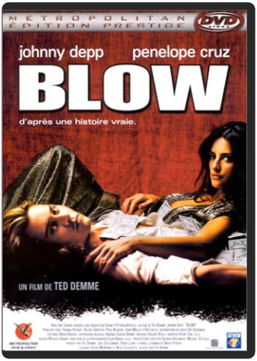
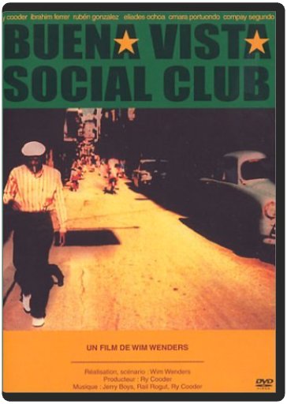
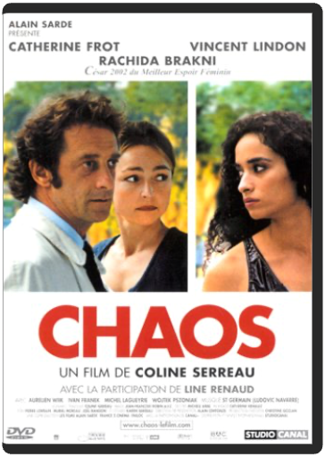

blowted demme  Dernier film de Ted Demme – mort en début d'année 2002 – Blow ressuscite les 70's à travers la figure d'un trafiquant de drogue, George Jung, toujours détenu par la justice américaine. Sorte de biopic d'un Américain ordinaire devenu l'un des piliers du narco-trafic, Blow – littéralement "sniffer" et "éclater" – vaut largement le détour, en dépit d'un discours ambigu sur son héros. Tout d'abord, à l'instar de l'insurpassable Casino ou du brillant Boogie Nights, le film bénéficie d'une B.O. et d'une reconstitution particulièrement soignée des seventies. Ensuite, grâce à la puissance de son modèle, il permet à Johnny Depp de réaliser une de ses meilleures prestations : cheveux longs et blonds, il compose une figure proche du flic de Donnie Brasco, également inspiré d'une histoire véridique. Et même si la mise en scène reste trop timide et trop appliquée pour un tel sujet – n'est pas Scorsese qui veut… –, on reste saisi par quelques scènes : la rencontre Escobar-Jung, la dénonciation de la mère. Enfin, malgré quelques bizarreries de casting – pourquoi avoir fait interpréter le père de Jung par Ray Liotta, acteur de la même génération de Johnny Depp ? – c'est avec plaisir qu'on retrouve Paul Reubens – ex-Pee Wee – dans le rôle d'un acolyte de Johnny Depp, et la très sexy Penelope Cruz. —Sylvain Lefort  bref, épisodes 1 à 40kyan khojandi, bruno muschio bref, épisodes 1 à 40kyan khojandi, bruno muschio Dans la vie, au début on naît, à la fin on meurt, entre les deux il se passe des trucs. Bref. C'est l'histoire d'un mec, entre les deux. Bref raconte au travers de pastilles hilarantes, le quotidien d'un trentenaire un peu loser. Un montage ultra-rythmé et des répliques cinglantes font de Bref la série incontournable de l'année.  bref, épisodes 41 à 82kyan khojandi, bruno muschio bref, épisodes 41 à 82kyan khojandi, bruno muschio Dans la vie, au début on naît, à la fin on meurt, entre les deux il se passe des trucs. Bref. C'est l'histoire d'un mec, entre les deux. Bref raconte au travers de pastilles hilarantes, le quotidien d'un trentenaire un peu loser. Un montage ultra-rythmé et des répliques cinglantes font de Bref la série incontournable de l'année... buena vista social clubwim wenders Bienvenue au club ! Wim Wenders nous offre là un véritable bain de jouvence musical et cinématographique en nous entraînant à La Havane, à la découverte de ces fameux musiciens cubains légendaires, les "Super Abuelos" d'environ 90 ans. L'initiateur du projet, c'est le guitariste Ry Cooder (compositeur de Paris Texas, du même Wenders) parti en 1996 à la recherche des vieilles gloires de la musique cubaine. Enthousiasmé par l'aventure, le réalisateur l'accompagne lors d'un second voyage.  casse-tête chinoiscédric klapisch casse-tête chinoiscédric klapisch On retrouve Xavier avec Wendy, Isabelle et Martine quinze ans après l'Auberge Espagnole et dix ans après les Poupées Russes. Tout paraissait si simple alors mais la vie de Xavier ne cessera de prendre des détours inattendus entre Paris et New-York. chaoscoline serreau Chaos est sans aucun doute le meilleur film de Coline Serreau. L'histoire, très humaine, brasse une multitude de thèmes et tourne autour de la résurrection. Celle de Malika, une jeune prostituée, tabassée à mort par des proxénètes, et qui tombe dans le coma ; celle d'Hélène qui, accompagnée de son mari Paul, a assisté à ce spectacle sans ciller, et qui va tout mettre en œuvre pour remettre Malika sur pieds. Entourée d'acteurs formidables tels que Catherine Frot, Vincent Lindon, Line Renaud et la très talentueuse Rachida Brakni (césar du meilleur espoir féminin 2002), Coline Serreau étale au grand jour des sujets très forts comme la prostitution, le sort des femmes dans la communauté maghrébine, et l'absence d'humanité qui s'installe dans le monde. Elle réussit une œuvre intense et toujours juste, accompagnée d'une musique qui colle parfaitement aux images, celle de St Germain. Non dénué d'humour, Chaos est un film qui brille par son sujet, son interprétation et sa mise en scène. Que demander de mieux ! —Marc Maesen |


 Made with Delicious Library
Made with Delicious LibraryNancy, State zipflap congrotus delicious library Thomas, Julien